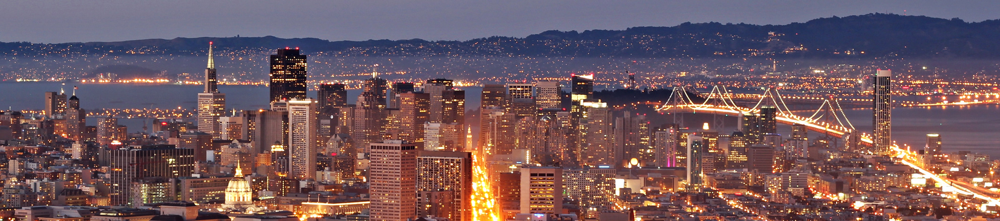
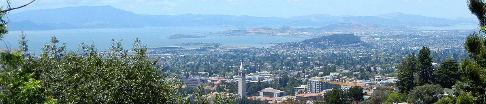
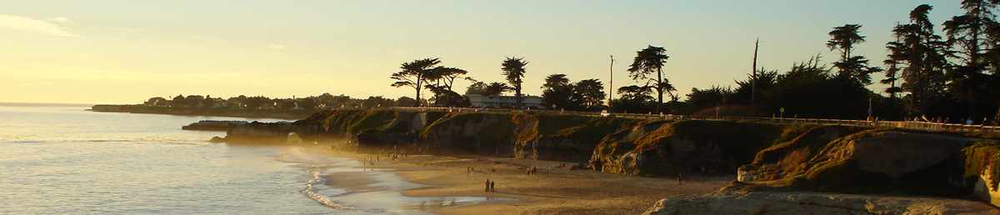
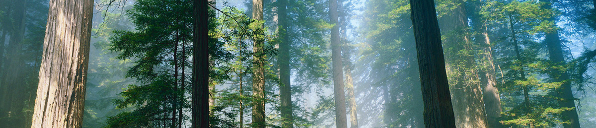
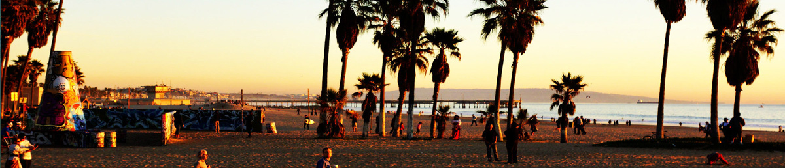

Here are some sightseeing tips from Amiee, for anyone who's planning to do some travelling around the wedding!
San Francisco
San Francisco is fairly easy to navigate as a tourist. In fact, if you go to google maps and search for directions click on the little bus icon - it will provide directions via public transit.
I suggest picking up a guidebook and choosing a few of the tourist highlights. Some lovely walks can be found near Coit Tower, the Cable Car journey from Union Square to Fisherman’s Wharf is thrilling, and once in Fisherman’s Wharf you can head to Alcatraz and take a tour, visit the new exploratorium, or simply enjoy fresh crab for lunch!
I really like the view of the “Painted Ladies” from Alamo Square, and from there you can walk to the Haight/Ashbury district for shopping (Ronan’s favourite records store is located there) and wander on into Golden Gate Park, perhaps have tea at the Japanese Tea Gardens or see the buffalo roam.
Anchor Steam Brewery is an independent brewery in San Francisco. The offer FREE daily tours, but you have to call and make a booking (and the tours fill up MONTHS ahead of time). I highly recommend booking a spot, afterwards you get to sample a few free beers.
China Beach is a lovely spot to take photos with the Golden Gate Bridge in the background (if it’s not too foggy).
The Mission district is SF is a great place for authentic Mexican food, second hand and boutique shopping, and getting to see a bit of authentic SF life. Yelp has a list of favourites (I can concur that Tartine is amazing) and the NY Times did apiece on the best of the Mission as well. The mission is a great spot for bars and nightlife.
The Castro is another delightful SF neighbourhood. This area is known for being the gay epicentre of the city (the former residence of Harvey Milk was in the Castro). You can take a walking tour, which is meant to be a really informative and fun activity for anyone. Nightlife in the Castro recommended for the adventurous, for the less adventurous I enjoy people-watching at Squat and Gobble, a delightful opportunity to have eggs benedict and watch lovely mustachioed couples dining with their tiny tiny dogs.
There are some great online sites for more ideas. See here, here and here to get started (some day trip ideas there too)!
The East Bay
The East Bay is an easy BART journey from San Francisco. Here is the trip advisor guide to attractions. You will get to check out Mills College and The Bancroft since you’re (obviously) going to attend the wedding.
So because my main interests include both eating and shopping, here are my tips for those who also enjoy these activities as well:
- Fourth Street in Berkeley is fun for posh boutique shopping - really great gifts and clothes to be found. If you’re a non-shopper being dragged along by a shopping-enthusiast take a walk to the Vivarium, a giant reptile store where you can browse. I am planning to take my nephew - it’s seriously impressive.
- College Avenue is also a great place to stroll and shop, if you enjoy slightly less posh boutiques, gift shops and secondhand finds. There are some lovely places to eat as well. See the Rockridge Guide for some ideas. Personally Cactus Taqueria is my favourite place to order an aguas frescas [...
- ...] Zachary’s is a well-known spot for excellent deep-dish pizza, Tootsie’s Shoes is where I worked in college (they do pedicures!) and Jeremy's is the place for discounted designer clothes.
- If you’re staying in Berkeley you’re within walking distance of Telegraph Avenue and Shattuck. There is loads to buy and eat, without working up a sweat. I particularly enjoy Cheeseboard Pizza and Saul’s Deli, which are on the north end of Shattuck (often called the ‘gourmet ghetto’) near the famous Chez Panisse. Angelines offers Cajun food, Jupiter is good for beer and pizza, La Note is lovely for breakfast and Rick and Ann’s is my parent’s favourite place!
Okay, and ladies, if you want a suggestions for where to get hair or nails done before the wedding just email me, there are lots of good spots in the area, and lads if ye need similar treatments there is an excellent barber in the locale, and Californian’s are pretty open-minded about the male-mani-pedi trend.
Now - for further travels...
Day Trips - Short Hops
There is much to see a short distance from San Francisco.
- Muir Woods and the town of Sausalito are a short trip away by car, and bus tours go from SF there. Additionally you can book a wine tour that will take you through these places and into Napa and Sonoma to taste some amazing Northern California wines. Here are the top three tour operators: Extranomical, Wine Country Tour Shuttle and the SanFrancisco.com tour.
- If you are renting a car do make a visit to Point Reyes and have a picnic lunch at Marin French Cheese. Sally and I used to do this drive every year, in hopes of seeing a humpback whale during theirmigration, and of course to check out the sea lions!
- Santa Cruz is an excellent place to visit in the summer. It has a beach-town vibe, and is surrounded by redwoods and wineries. The shopping in the town centre offers a good selection of boutiques and gifts, and the boardwalk is the place to go sample fried food, dip in the ocean, and ride the big dipper. You can also take a cheesy tour at the Mystery Spot.
Northern California
Once you go beyond the Napa/Sonoma wine country you will find yourself in the redwoods! There are so many beautiful drives and hikes.
- If you decide to continue the journey North, you are in for a treat. Northern California is stunning and the weather tends to be nice and cool, even in the summer months.
- Avenue of the Giants is a lovely drive - watch for deer. Prairie Creek is home to herds of elk (though for those of you who are used to jogging past them in Phoenix Park, this might not be as impressive a point). Once you’ve reached the national park head to Fern Canyon to see where some of Jurassic Park was filmed (of course for non-Jurassic Park fans, it’s still stunning).
- Some lovely towns to stay in include Trinidad, or Eureka where my mom was born (stay at Carter House Inn), and I’ve heard Guerneville is good as well (though I haven’t been in over a decade!)
Further afield...
You may as well continue onto Oregon and Washington from here. Portland and Seattle are great cities to visit, and of course you could even head to Canada. Victoria is a delightfully quaint place, and Vancouver is a wonderful city. There are some opportunities to sea kayak off the coast or take a boat tour and spot a pod of killer whales from the San Juan Islands.
Sourthern California
Many of you are planning a trip down the Pacific Coast Highway. Here are some things to stop and do along the way...
- Firstly there is Monterey. Their aquarium is world-famous - I suggest going in the morning and mid-week to try and avoid the crowds. Go ahead and set yourself down and watch the sea otters. Grottos is the place for dinner in Monterey. Sally recommends staying in Asilomar.
- Big Sur is just a stone’s-throw away. This national park is a real must-see if you’re going south. A friend of mine recently stayed in a yurt in Treebones Resort and had a blast. My parent’s favour Big Sur Lodge. There are lots of other options for various price ranges - have a good search on tripadvisor and wherever you stay BOOK EARLY! You can go for walks or hikes all around Big Sur, McWay Falls is a stunning view and pretty low-key hike. I’ve heard positive things about Big Sur Bakery and the photo ops at Bixby Bridge as well.
- Continue on just a little way and visit Hearst Castle, former residence of William Randolph Hearst (rumoured to be the inspiration behind the film Citizen Kane). This is a fab tour, once again BOOK EARLY. The only downside is looking at the stunning swimming pools and not being allowed to jump in - no fear, stay in a themed-room at the nearby Madonna Inn and you can swim in theirs.
- You’ll be very near Paso Robles and more wine country at this point, if you’re hankering for the Sideways experience. Santa Barbara is a gorgeous beachside city along the way. From there you’re only about an hour and a half from Los Angeles.
I know very little about the sites in LA. Here are my friend Katie’s top picks:
- The Getty Museum
- Santa Monica Pier
- Venice Beach (for people-watching from an outdoor bar)
- Abbot Kinney (the main street) for shopping and eating
- And if you can (and you should) an outdoor film screening at the Hollywood Forever Cemetary
Also, if you are in the Los Angeles area my dad is always advocating Tommy Burgers. In-N-Outs, found all over the state, are my personal favourites.
Further afield...
Katie recommends going as far as San Diego or Palm Springs to see the sights. From Palm Springs you can visit the famous Joshua Tree National Park, which has been highly recommended to me. If you do decide to venture this direction...
I suggest some good sun-cream and perhaps a wide-brimmed hat, drink lots of water and stay somewhere with a pool. Mind your delicate Irish complexions! And of course there is Las Vegas. Something about what happens there...